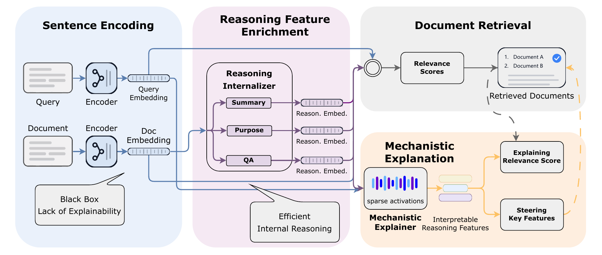
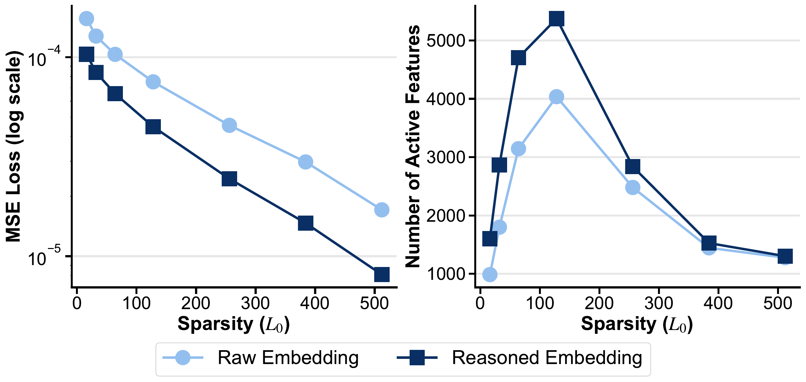
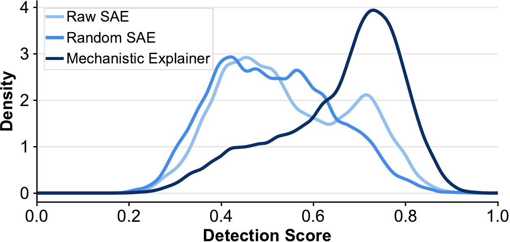
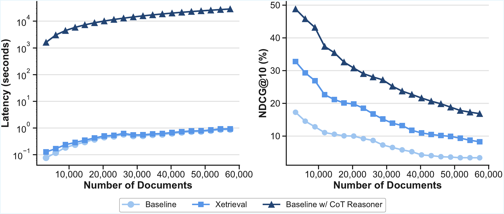
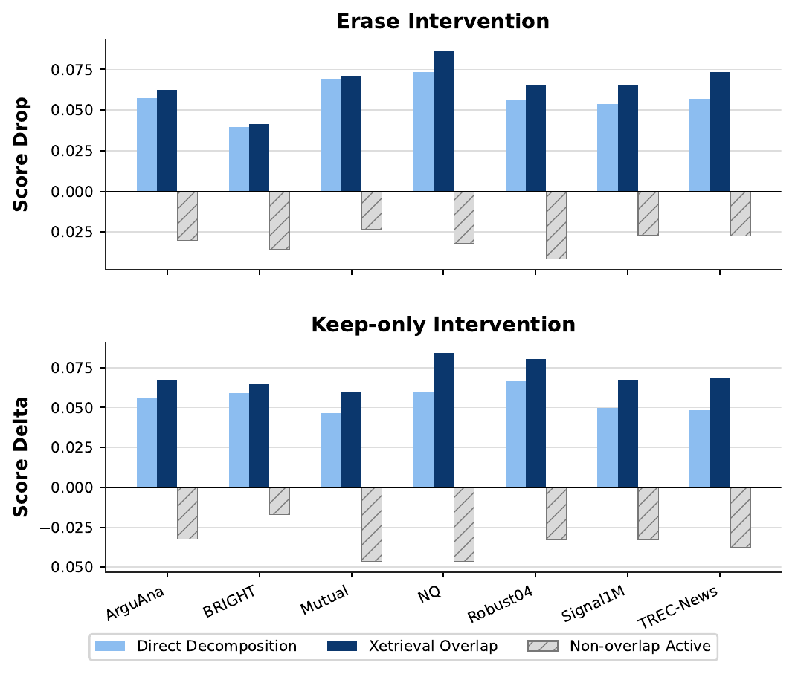
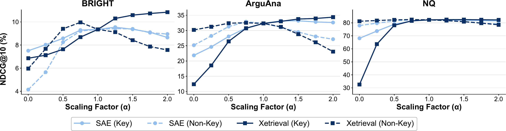

Mechanistic retrieval explanations
Xetrieval identifies sparse feature overlaps O(q,d)
that connect query and document representations.
Research Project
Beihang University · Beijing Institute for General Artificial Intelligence

Abstract
Explaining why dense retrievers assign high relevance scores remains challenging because retrieval decisions are made through opaque high-dimensional embeddings. Existing explanations often focus on surface signals, such as lexical matches, token alignments, or post-hoc textual rationales, and thus provide limited insight into the latent factors that shape dense retrieval behavior at the embedding level.
We propose Xetrieval, an embedding-level mechanistic framework for explaining dense retrieval. Xetrieval first introduces a lightweight reasoning internalizer that approximates Chain-of-Thought reasoning directly in the embedding space with a single forward pass, enriching sentence embeddings with reasoning-oriented information while avoiding expensive autoregressive generation. It then decomposes these reasoning-enhanced embeddings into sparse, human-interpretable features, each associated with a coherent natural language description. By aggregating sparse feature overlaps across multiple document-side views, Xetrieval provides feature-level explanations of individual retrieval decisions. Experiments on diverse retrievers and benchmarks show that Xetrieval uncovers coherent interpretable features, yields stronger pair-level intervention effects, and supports task-level feature steering.
Xetrieval identifies sparse feature overlaps O(q,d)
that connect query and document representations.
A lightweight feed-forward module injects reasoning-oriented signals into document embeddings without autoregressive generation.
Steering and intervention experiments test whether discovered features causally affect retrieval behavior.
Experiments
Xetrieval is evaluated across retrieval benchmarks and interpretability settings to test whether its sparse features are coherent, efficient to obtain, and interventionally tied to retrieval behavior. The figures below are converted only from PDF figures that are actually used in the LaTeX manuscript.
Reasoning Benefits Explainability
The reasoning internalizer preserves retrieval-relevant signals in embedding space while avoiding explicit CoT generation. When passed to the mechanistic explainer, reasoned embeddings show lower reconstruction error and activate richer sparse feature sets, suggesting a more structured representation space for feature-level analysis.

Interpretable Sparse Features
Xetrieval equips sparse features with natural-language hypotheses by summarizing top-activating samples, then evaluates coherence with a detection score. The reasoning-aware mechanistic explainer substantially outperforms Raw SAE and Random SAE baselines, indicating that reasoning-enhanced embeddings yield more distinguishable, human-interpretable factors.

Explanation Efficiency
On the Biology subset of BRIGHT, explicit CoT reasoning incurs growing computational overhead as the candidate set expands. Xetrieval instead uses a lightweight feed-forward pass over sentence embeddings, keeping explanation time low while consistently outperforming the base dense retriever and remaining competitive with CoT-enhanced retrieval.

Local Attribution
For each query-document pair, Xetrieval returns shared active features as the explanation span. Erasing these spans produces the largest decrease in the original similarity score, while retaining them preserves or increases similarity more effectively than direct decomposition. Non-overlap active features often behave like distracting document information.

Task-level Feature Steering
Xetrieval scores features by contrastive co-activation on relevant and irrelevant query-document pairs. Amplifying the resulting key features improves retrieval performance, while suppressing them causes clear degradation. Compared with direct decomposition on raw embeddings, Xetrieval identifies features with stronger and more consistent steering effects, showing that dense retrieval behavior can be concentrated into sparse, verifiable mechanisms.

Code
The release contains the inference pipeline, TopK-SAE mechanistic
explainer checkpoint, and reasoning internalizer checkpoints for
qa, summary, and purpose
document-side views.
git clone https://github.com/Hihiczx/Xetrieval.git
cd Xetrieval
pip install -r requirements.txt
python explain_retrieval.py \
--input_jsonl examples/query_doc_pairs.jsonl \
--output_jsonl outputs/explanations.jsonl \
--embedding_model_name intfloat/e5-large-v2 \
--reasoning_internalizer_dir checkpoints/reasoning_internalizer \
--mechanistic_explainer_checkpoint checkpoints/sae_model.pt \
--device cuda \
--batch_size 64Citation
If you find Xetrieval useful for your research, please cite:
@article{cai2026xetrieval,
title={Xetrieval: Mechanistically Explaining Dense Retrieval},
author={Cai, Zhixin and Bai, Jun and Liu, Yang and Li, Jiaqi and Zhang, Yichi and Li, Taichuan and Chen, Zhuofan and Jia, Zixia and Zheng, Zilong and Rong, Wenge},
journal={arXiv preprint arXiv:2605.29507},
year={2026}
}